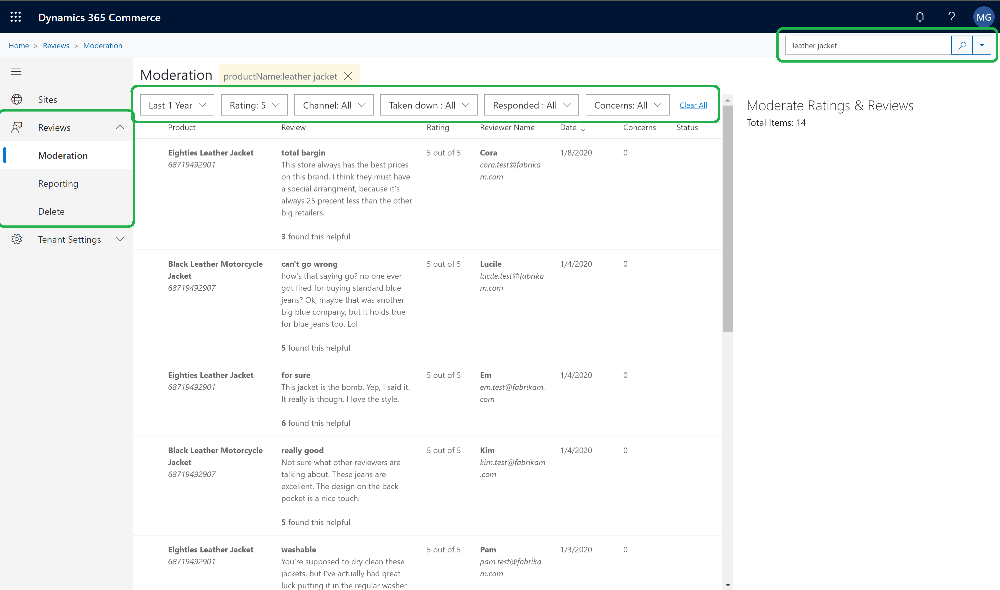
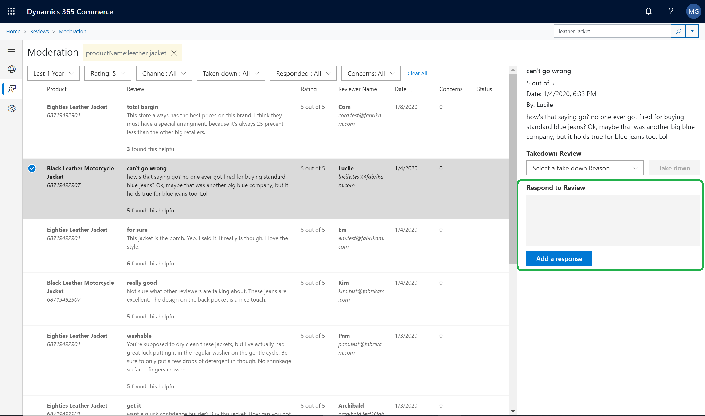
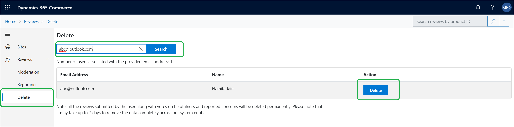
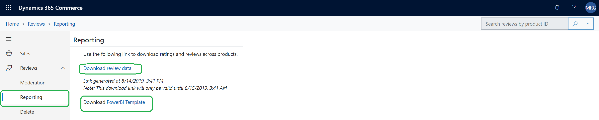
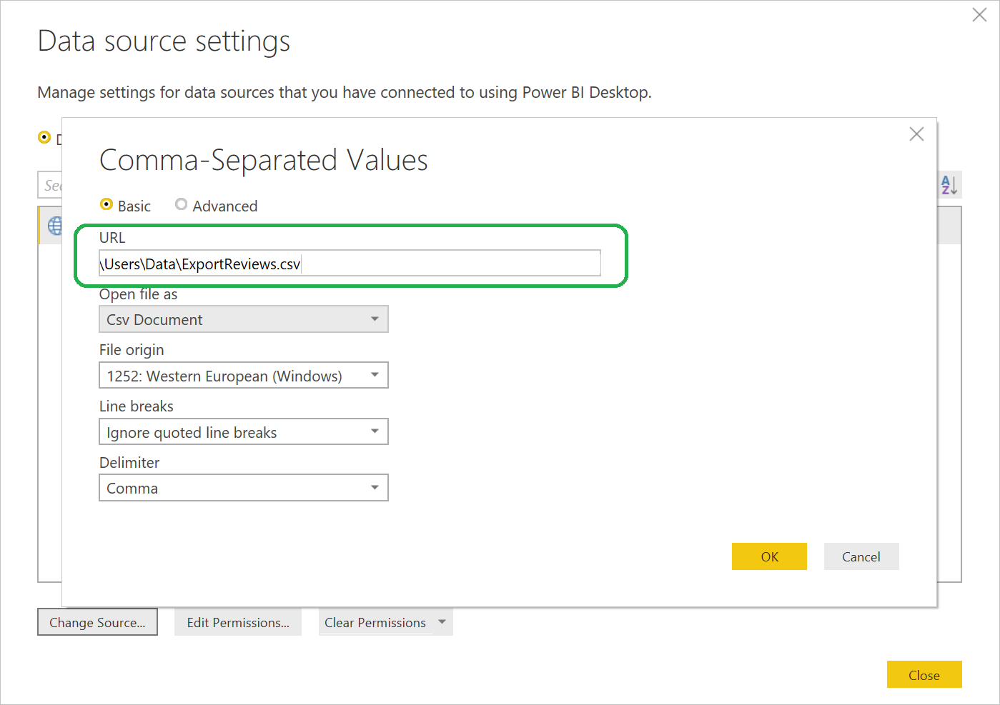
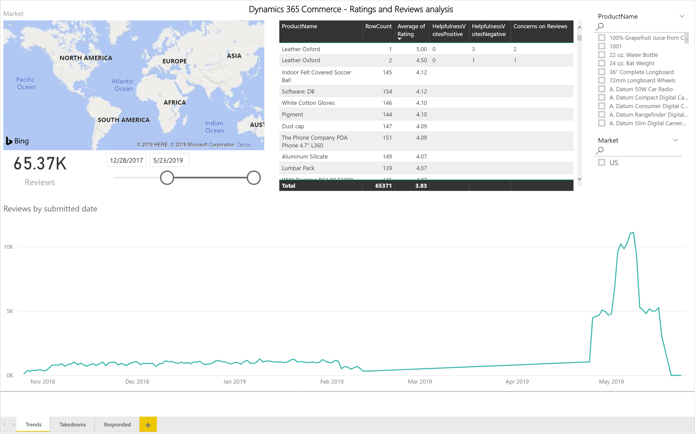

Bewertungen und Prüfungen verwalten
Important
Dynamics 365 Retail ist jetzt Dynamics 365 Commerce und bietet umfassende Handelsfunktionen für alle Kanäle – von E-Commerce über Shops bis hin zu Callcentern. Weitere Informationen zu diesen Änderungen finden Sie unter Microsoft Dynamics 365 Commerce.
In diesem Thema wird erläutert, wie Sie Bewertungen und Prüfungen im Microsoft Dynamics 365 Commerce-Site Builder verwalten.
Übersicht
Dynamics 365 Commerce verwendet Microsoft Azure Cognitive Service, um den Prüftext automatisch zu moderieren, indem einfache Wörter redigiert werden. Darüber hinaus können Moderatoren Dynamics 365 Commerce-Site Builder zum Implementieren der folgenden manuellen Aufgaben verwenden:
- Moderieren Sie Prüfungen, indem Sie darauf antworten oder sie entfernen.
- Löschen Sie die Bewertungen eines Kunden auf Kundenwunsch.
- Importieren Sie Bewertungen und Überprüfungsdaten für alle Produkte in eine Power BI-Vorlage, damit Trends für Bewertungen und Überprüfungen analysiert werden können.
Lesen einer Prüfung
Um eine Überprüfung in den Commerce Site Builder hochzuladen, folgen Sie diesen Schritten.
- Navigieren Sie zu Start > Bewertungen > Moderation.
- Verwenden Sie das Suchfeld oben rechts auf der Seite, um die angezeigten Bewertungen nach Produkt-ID, Produktname oder Bewertungstext zu filtern.
Mit zusätzlichen Filtern können Sie die Überprüfungen nach Zeitraum, Bewertung, Kanal oder Anliegenstatus einschränken (deaktiviert, beantwortet oder gemeldet).

Auf Bewertung antworten
Manchmal äußern Kunden, die ein Produkt gekauft haben, ihre Zufriedenheit oder Unzufriedenheit, oder sie verstehen nicht, wie das Produkt verwendet wird. Als Moderator können Sie eine Antwort auf eine Bewertung abgeben. Diese Antwort wird zusammen mit der Überprüfung auf der Website angezeigt.
Um auf eine Überprüfung im Commerce Site Builder zu antworten, folgen Sie diesen Schritten.
- Navigieren Sie zu Start > Bewertungen > Moderation.
- Suchen Sie die Überprüfung, für die eine Antwort erforderlich ist, und wählen Sie sie aus.
- Wählen Sie im Eigenschaftenbereich rechts Eine Antwort hinzufügen aus.
- Geben Sie den Antworttext und den Namen ein, der für den Antwortenden angezeigt werden soll. Der Standardname des Antwortenden lautet Moderator.
- Wählen Sie abschließend Antwort senden aus.

Entfernen einer Bewertung
Manchmal gibt es eine geschäftliche Rechtfertigung dafür, dass Moderatoren Kundenbewertungen entfernen.
Um eine Überprüfung aus dem Commerce Site Builder zu entfernen, folgen Sie diesen Schritten.
- Navigieren Sie zu Start > Bewertungen > Moderation.
- Suchen Sie die Bewertung, die entfernt werden muss, und wählen Sie sie aus.
- Wählen Sie im Eigenschaftenbereich rechts einen Grund für das Entfernen unter Enfernungsüberprüfung und dann Entfernen aus.
Löschen von Bewertungen eines Kunden auf Kundenwunsch
Manchmal möchten Kunden, dass ihre Bewertungen und Bewertungsdaten dauerhaft von einer E-Commerce-Website gelöscht werden. Ein Moderator, der eine Entfernungsanforderung von einem Kunden erhält, kann die Kundendaten mithilfe der Funktion zum Löschen von Überprüfungen entfernen. Um die Daten eines Kunden zu finden und zu löschen, benötigt der Moderator die E-Mail-Adresse, mit der sich der Kunde angemeldet und Bewertungen abgegeben hat.
Führen Sie die folgenden Schritte aus, um Kundendaten im Commerce Site Builder zu suchen und zu löschen.
- Navigieren Sie zu Startseite > Bewertungen > Löschen.
- Geben Sie im Feld Suche nach Benutzern über die E-Mail-Adresse die E-Mail-Adresse des Kunden ein und wählen Sie dann Suchen aus.
- Wenn der Kunde eine Überprüfungsaktivität hat (z. B. Überprüfungsbeiträge, Abstimmungen zur Nützlichkeit der Bewertungen eines anderen Kunden oder Kommentare zur Bewertung eines anderen Kunden), werden die Ergebnisse angezeigt. Für jedes Element gibt es die Schaltfläche Löschen.
- Wählen Sie für jedes Element, das gelöscht werden muss, Löschen aus. Wenn Sie zur Bestätigung aufgefordert werden, wählen Sie Ja aus.

Note
- Es kann bis zu sieben Tage dauern, bis die Daten vollständig aus dem System entfernt wurden. Moderatoren sollten Kunden über diese Verzögerung informieren.
- Wenn Kunden ihren Namen in ihren Kontoeinstellungen geändert haben, werden möglicherweise mehrere Elemente in den Suchergebnissen angezeigt. Um die Kundendaten vollständig zu löschen, muss der Moderator in diesem Fall Löschen für jeden Artikel auswählen.
Herunterladen von Bewertungs- und Prüfungsdaten
Mit Commerce Site Builder können Moderatoren umfassend Bewertungs- und Prüfdaten importieren, damit sie Trends analysieren können. Eine Power BI-Vorlage mit grundlegenden Metriken ist verfügbar. Moderatoren können diese Vorlage verwenden, um umfassend importierte Daten zu verknüpfen und ein Dashboard anzuzeigen. Sie müssen kein benutzerdefiniertes Dashboard erstellen. Moderatoren können die Power BI-Vorlage auch anpassen, damit sie ihre spezifischen Anforderungen erfüllt.
Führen Sie die folgenden Schritte aus, um Bewertungs- und Prüfdaten im Commerce Site Builder herunterzuladen.
- Navigieren Sie zu Start > Bewertungen > Berichterstellung.
- Wählen Sie Prüfdaten herunterladen aus, um umfassende Bewertungs- und Prüfdaten im CSV-Format (Comma-Separated Values) herunterzuladen.
Bewertungs- und Prüftrends anzeigen
Moderatoren können die Power BI-Vorlage herunterladen, damit sie Trends in einem Dashboard anzeigen können.
Führen Sie die folgenden Schritte aus, um Bewertungs- und Prüfdaten im Commerce Site Builder anzuzeigen.
Navigieren Sie zu Start > Bewertungen > Berichterstellung.
Wählen Sie PowerBI-Vorlage aus, um die Vorlage herunterzuladen.

Öffnen Sie die heruntergeladene Vorlage durch Verwendung der Power BI-App. Schließen Sie das Dialogfeld Zugriff auf Webinhalt, das angezeigt wird, und schließen Sie dann die angezeigte Fehlermeldung „Aktualisieren“.
Navigieren Sie zu Startseite, wählen Sie Abfragen bearbeiten und dann Datenquelleneinstellungen aus.
Wählen Sie im Dialogfeld Datenquelleneinstellungen die Option Quelle ändern aus.
Geben Sie im Feld URL den Pfad der Prüfdaten ein, die Sie in der vorherigen Prozedur (Beispiel: c:\reviews\ReviewsData.csv) heruntergeladen haben.

Wählen Sie OK und dann Änderungen anwenden aus. Es dauert ein bis zwei Minuten, um Ihre Änderungen auf die Datenquelle anzuwenden.
Wählen Sie Trendbilanz aus, um die Trends für Bewertungen und Prüfungen anzuzeigen.

Zusätzliche Ressourcen
Überblick über Bewertungen und Prüfungen
Abonnieren zum Verwenden von Bewertungen und Prüfungen
Konfigurieren von Bewertungen und Prüfungen
Synchronisieren von Produktbewertungen in Dynamics 365 Retail